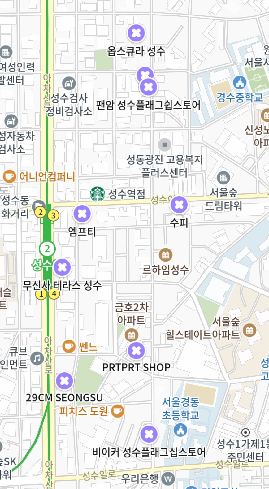

옵스큐라 성수
주소 : 서울특별시 성동구 연무장길 101-1
tel : 02-6235-0910
13:00 - 20:00
성수동에 위치한 스타일리시하고 트렌디한 옷 가게입니다.
남성복을 주로 취급하며, 다양한 스타일의 옷과 액세서리를 제공하고
있습니다. 모던하고 세련된 인테리어로 꾸며져 있으며,공간 안에는
다양한 브랜드의 옷들이 디스플레이되어 있어 고객들이 다양한
옵션을 선택할 수 있습니다. 가게의 컬렉션은 항상 최신 트렌드를
반영하고 있어 스타일리시한 분들에게 인기가 많습니다. 또한, 가게
내부에서는 주기적으로 패션 이벤트와 프로모션을 진행하여
고객들에게 특별한 혜택을 제공하고 있습니다. 스타일과 트렌드를
중시하는 분들께 추천드립니다. 만족스러운 쇼핑 경험과 멋진 옷들을
만나보세요!
플라스틱프로덕트 성수
주소 : 서울특별시 성동구 연무장길 89
4층
tel : 0507-1474-4679
12:00 - 20:00
성수동에 위치한 옷가게로 유니크하고 개성있는 의류와 악세서리를
판매하는 곳으로 유명합니다.. 옷가게 내부는 아늑하고 모던한
분위기로 꾸며져 있으며, 다양한 스타일의 의류와 악세서리를 즐길
수 있습니다. 또한 소재에 대한 집요한 선택과 디테일한 디자인이
매력적인 제품들을 만들어냅니다. 이곳에서는 유니크한 패션
아이템뿐만 아니라 한정판 제품들도 많이 찾아볼 수 있습니다. 매장
내부에서는 친절한 스태프들이 고객들을 도와주며, 고객들의 다양한
취향과 스타일에 맞는 아이템을 찾아주기도 합니다. 꽁꽁 숨겨져있는
가게를 찾아가보는 과정에서 특별한 재미를 느껴보세요!
PRTPRT SHOP
주소 : 서울 성동구 연무장길 29-17 2층
tel : 0507-1310-9178
12:00 - 20:00
패션 유튜버 짱구대디가 운영하는 성수동 편집샵입니다.
다양한
브랜드가 입점해 있어서 쇼핑하기도 좋고 트렌드한 패션을 볼 수
있는 공간이에요. 노티드 도넛 건물 2층이라는 걸 기억해 찾으시면
편하게 방문할 수 있어요. 베이직 하지만 포인트가 있는 패션
아이템을 좋아하시는 분들께 추천합니다. 겐조와 같은 해외 부티끄
제품들을 만나볼 수 있고, 유명한 국내 도메스틱 브랜드 제품들도
진열되어 있습니다. PRTPRT는 우리나라에서 현재 어떤 옷이 인기
있고, 트렌드를 이끌고 있는 지 한눈에 알 수 있습니다. 방문하셔서
재미나게 여름 가을 쇼핑하시면 좋겠습니다!
비이커 성수점
주소 : 서울 성동구 연무장길 7-1 비이커 성수
플래그십스토어
tel : 02-464-4750
11:00 - 20:00
비이커 성수는 빛나는 청춘을 컨셉으로 하는 편집샵입니다.
새로운 소재와 형태를 갖춘 오브제, 금속과 PVC 등 재료 특성이
뚜렷한 소재로 만든 테이블, 선반, 거울, 벤치, 행거 등으로
차별화된 공간에서 예술적 감도를 엿볼 수 있습니다. 젊은 세대가
좋아하는 가니, 후즈와 같은 에센셜 브랜드를 중심으로 하여 비이커
자체 브랜드 상품을 더 많이 보여줄 수 있게 꾸며져 있습니다. 매장
1층은 팝업 공간과 MZ 고객을 위한 트렌디 브랜드, 액세서리 등
라이프스타일 상품군 위주로 구성되어있고 비이커 성수점에서만
단독으로 판매하는 컬러 제품 등을 볼 수 있습니다. 3층은
메종키츠네, 단톤, 스포티&리치, 캐나다구스 등 남성부문에서 인기인
브랜드 위주로 운영하고 있습니다.